—Sommaire
- 1Contexte, préparation et premier constat« Ça ne marche que chez vous » & prérequis
- 2Synthèse Docker et les trois sens de localhostImage, conteneur, couches, réseau et ports
- 3Activité 1 — L'API dans un conteneur.dockerignore, Dockerfile, port 8001 et 3 expériences
- 4Sprint 1 — La page web dans un conteneur NginxChemin relatif, reverse proxy /api/ et origine unique
- 5Sprint 2 — Docker Compose, healthcheck et volumesOrchestration, 4 codes Nginx, F12, logs, stats et panne 502
- 6Décisions d'architecture (ADR 004)Modèle (COPY vs volume) et publication des ports (8080 vs 8001)
- 7Questions de compréhension et Ticket de sortie5 questions d'architecture + analyse de production
- 8Livraison et conclusionVérification Git (.env exclu), Pull Request et tag tp5
logiai-api & logiai-web)pytest au vertdocker compose up -d --build.env n'apparaît en clair dans les captures d'écran ni dans Git.
1.Contexte, préparation et premier constat
À l'Atelier 4, l'API LogiAI a été testée (52 tests), protégée par clé API (X-API-Key)
et appelée par une page web. L'objectif de l'Atelier 5 est de la rendre transportable :
l'API et la page tournent chacune dans un conteneur, et une seule commande démarre l'ensemble.
1.1 Vérifications initiales (Docker Desktop WSL2, modèle et pytest)
Depuis la racine du projet contenant logiai/, web/, data/, models/ et .env,
nous vérifions que le démon Docker Linux répond sans erreur, que les 52 tests de l'Atelier 4 passent au vert
et que les artefacts du modèle (models/model.joblib et models/model_info.json) existent avant le build.
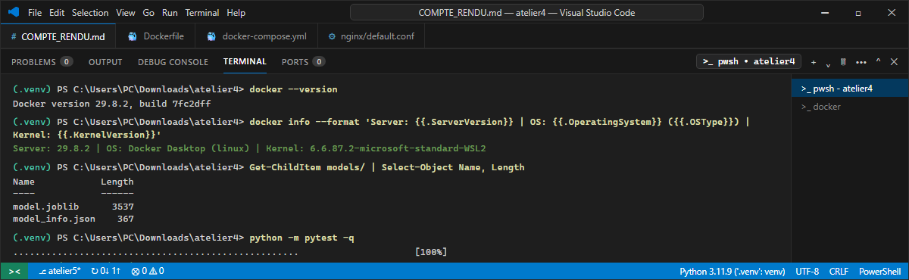
docker --version, docker info (WSL2), présence de model.joblib et 52 tests pytest réussis.1.2 Premier constat : « ça ne marche que chez vous »
| Ce que le projet suppose | Qui le garantit aujourd'hui (sans Docker) | Qui le garantit avec Docker & Compose |
|---|---|---|
Une version de Python (3.11) et des bibliothèques compatibles avec model.joblib |
Vous, avec .venv et requirements.txt |
L'image Docker (FROM python:3.11-slim + pip install) |
Le fichier .env avec les deux clés (LOGIAI_API_KEY, LOGIAI_ADMIN_KEY) |
Vous | env_file: .env injecté à l'exécution (hors de l'image) |
Un modèle entraîné dans models/ (model.joblib, model_info.json) |
Vous, avec python -m logiai.train |
Empaqueté dans l'image (COPY) et monté en volume (./models:/app/models) |
Deux terminaux : uvicorn (port 8000), puis python -m http.server 5500 |
Vous, manuellement dans deux terminaux | Une seule commande : docker compose up -d --build |
« Si je donne mon dossier à un camarade, il doit installer Python 3.11, créer et activer un environnement virtuel .venv, installer requirements.txt, créer son propre fichier .env avec deux clés, générer les données (python -m logiai.dataset), entraîner le modèle (python -m logiai.train), puis ouvrir deux terminaux pour lancer uvicorn sur le port 8000 et python -m http.server 5500 pour la page web. »
2.Synthèse Docker et les trois sens de localhost
2.1 Docker en dix idées appliquées à LogiAI
| Question | Réponse dans LogiAI |
|---|---|
| Qu'est-ce qui est figé ? | Une image : Python 3.11, bibliothèques, code, données et modèle, en couches en lecture seule |
| Qu'est-ce qui tourne ? | Un conteneur : un processus isolé, créé à partir d'une image |
| Comment décrire l'image ? | Un Dockerfile : une instruction, une couche |
| Que voit le build ? | Le contexte : le dossier courant, filtré par .dockerignore |
| Comment atteindre l'API ? | Publier un port : hôte:conteneur (8001:8000) |
| Comment deux conteneurs se parlent-ils ? | Un réseau Docker, avec un DNS interne qui résout les noms de services (api, web) |
| Que devient une donnée écrite dans le conteneur ? | Elle disparaît avec lui, sauf si elle est dans un volume |
| Comment démarrer plusieurs services ? | Docker Compose : un fichier YAML (docker-compose.yml), une commande |
| Comment savoir si l'API est prête ? | Un healthcheck : un test exécuté périodiquement dans le conteneur |
| Où sont les secrets ? | Dans .env, transmis à l'exécution, jamais copié dans l'image ni dans Git |
2.2 Ports, réseau et les trois sens de localhost
8001:8000 se lit hôte:conteneur : l'API écoute sur le port 8000 dans son conteneur,
et Windows l'atteint sur le port 8001. Pour que l'API soit joignable depuis l'extérieur de son conteneur,
Uvicorn doit écouter sur 0.0.0.0 (avec 127.0.0.1, seul l'intérieur du conteneur pourrait lui parler).
| Où êtes-vous ? | localhost (127.0.0.1) désigne | Comment joindre l'API ? |
|---|---|---|
| Dans votre navigateur, sur Windows | Votre machine Windows | http://localhost:8080/api/... (via Nginx) ou http://localhost:8001 (direct) |
Dans le conteneur api | Ce conteneur api lui-même | http://127.0.0.1:8000/health (utilisé par le healthcheck) |
Dans le conteneur web | Ce conteneur web lui-même | Par son nom de service DNS Docker : http://api:8000/ |
3.Activité 1 — L'API dans un conteneur
3.1 Fichier .dockerignore
.venv/
.venv_test/
venv/
.git/
.gitignore
__pycache__/
*.py[cod]
.pytest_cache/
.ruff_cache/
build/
dist/
*.egg-info/
.env
.vscode/
.idea/
docs/
tests/3.2 Dockerfile de l'API
FROM python:3.11-slim
WORKDIR /app
COPY requirements.txt ./
RUN pip install --no-cache-dir -r requirements.txt
COPY logiai/ ./logiai/
COPY data/ ./data/
COPY models/ ./models/
ENV LOGIAI_HOME=/app
EXPOSE 8000
CMD ["uvicorn", "logiai.api.main:app", "--host", "0.0.0.0", "--port", "8000"]
Ordre des couches : requirements.txt et pip install sont placés en premier pour être mis en cache tant que les dépendances ne changent pas. Dans logiai/config.py, ROOT = Path(os.getenv("LOGIAI_HOME", ...)) lit LOGIAI_HOME.
3.3 Construire, lancer et vérifier sur le port 8001
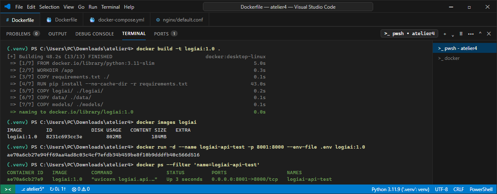
logiai:1.0, affichage de docker images et conteneur logiai-api-test en cours d'exécution dans docker ps.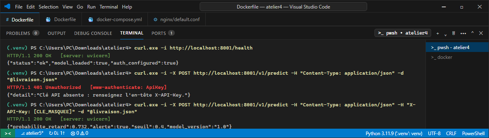
/health renvoie 200, /v1/predict renvoie 401 sans clé et 200 avec la clé du .env.3.4Trois expériences pour casser le conteneur
Après chaque expérience, le conteneur est arrêté et supprimé (docker stop logiai-api-test, docker rm logiai-api-test).
| Expérience | Prévu | Obtenu | Explication en une phrase |
|---|---|---|---|
1. Sans --env-filedocker run -d --name logiai-api-test -p 8001:8000 logiai:1.0 |
/health indique auth_configured: false et /v1/predict renvoie 401 même avec la bonne clé. |
/health → {"status":"ok","model_loaded":true,"auth_configured":false} ; /v1/predict avec clé → 401 Clé API invalide. |
Le conteneur est isolé du disque de l'hôte et .dockerignore a exclu .env de l'image : sans --env-file, les variables d'environnement des clés valent None dans le conteneur et toute requête est refusée (échec sûr). |
| 2. Sans publier le port Relance sans -p 8001:8000 |
Le conteneur est Up, mais curl échoue à joindre localhost:8001. |
docker ps affiche 8000/tcp sans redirection, et curl renvoie : curl: (7) Failed to connect to localhost:8001: Could not connect to server. |
L'instruction EXPOSE 8000 ne fait que documenter le port d'écoute : sans -p 8001:8000, aucun port n'est ouvert sur Windows vers le réseau isolé du conteneur. |
3. Écoute sur 127.0.0.1--host 127.0.0.1 (logiai:test) avec -p 8001:8000 |
Le port est publié mais l'API coupe ou rejette toute connexion venant de l'extérieur du conteneur. | docker ps montre bien 0.0.0.0:8001->8000/tcp, mais curl échoue avec curl: (52) Empty reply from server. |
Dans le conteneur, 127.0.0.1 désigne uniquement la boucle locale interne du conteneur ; pour accepter le trafic arrivant par l'interface réseau Docker (eth0), Uvicorn doit écouter sur 0.0.0.0. |
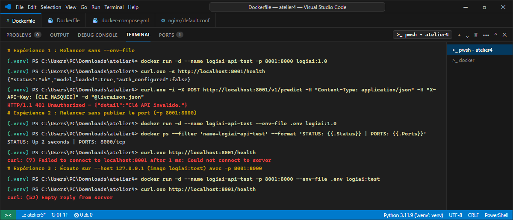
4.Sprint 1 — La page web dans un conteneur Nginx
Nginx sert la page statique web/index.html sur le port 80 (publié en 8080 sur Windows)
et relaie tous les appels commençant par /api/ vers le service FastAPI http://api:8000/.
4.1 Les trois fichiers du Sprint 1
1. Modification de web/index.html (une ligne) :
const API_URL = '/api/v1/predict';2. nginx/default.conf :
server {
listen 80;
server_name localhost;
root /usr/share/nginx/html;
index index.html;
location / {
try_files $uri $uri/ /index.html;
}
location /api/ {
proxy_pass http://api:8000/;
proxy_set_header Host $host;
proxy_set_header X-Real-IP $remote_addr;
proxy_set_header X-Forwarded-For $proxy_add_x_forwarded_for;
}
}3. web/Dockerfile :
FROM nginx:alpine
COPY web/index.html /usr/share/nginx/html/index.html
COPY nginx/default.conf /etc/nginx/conf.d/default.conf
EXPOSE 80proxy_pass
Le slash final de proxy_pass http://api:8000/; indique à Nginx de retirer le préfixe /api/ :
un appel à /api/v1/predict arrive ainsi à FastAPI sous la forme /v1/predict.
4.2 Chemin emprunté par /api/v1/predict de la page à FastAPI
- Navigateur (Windows) : depuis la page ouverte sur
http://localhost:8080,fetch('/api/v1/predict')envoie une requêtePOST http://localhost:8080/api/v1/predictavec l'en-têteX-API-Key. - Port publié (
8080:80) : Docker redirige la requête vers le port80du conteneurlogiai-web(Nginx). - Interception et réécriture Nginx : le bloc
location /api/capte la requête, retire le préfixe/api/grâce au slash final deproxy_pass http://api:8000/;, et résout le nomapivia le DNS interne du réseau Docker Compose. - Relais vers FastAPI : Nginx transmet
POST http://api:8000/v1/predictau conteneurlogiai-apien conservantX-API-Keyet en ajoutantHost,X-Real-IPetX-Forwarded-For. - Réponse : FastAPI vérifie la clé, calcule la probabilité de retard et renvoie le JSON
200 OKà Nginx, qui le renvoie au navigateur.
5.Sprint 2 — Docker Compose, healthcheck et volumes
5.1 Fichier docker-compose.yml
services:
api:
build:
context: .
dockerfile: Dockerfile
container_name: logiai-api
ports:
- '8001:8000'
env_file:
- .env
environment:
LOGIAI_HOME: /app
volumes:
- ./models:/app/models
- ./data:/app/data
healthcheck:
test: ["CMD", "python", "-c", "import urllib.request; urllib.request.urlopen('http://127.0.0.1:8000/health')"]
interval: 30s
timeout: 5s
retries: 3
start_period: 10s
web:
build:
context: .
dockerfile: web/Dockerfile
container_name: logiai-web
ports:
- '8080:80'
depends_on:
api:
condition: service_healthy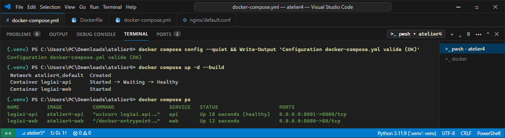
docker compose config, démarrage docker compose up -d --build et état docker compose ps avec logiai-api en Up (healthy).5.2 Étape 4 — Test de bout en bout (port 8080 et Swagger port 8001)
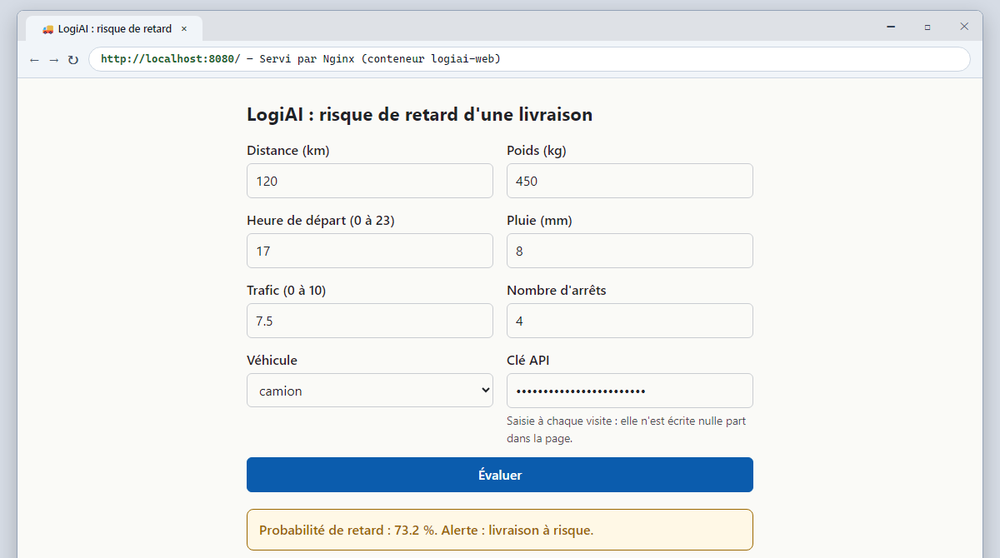
http://localhost:8080 : probabilité de retard de 73.2 % avec alerte (clé masquée).5.3Appels via Nginx, inspection F12 et Swagger UI
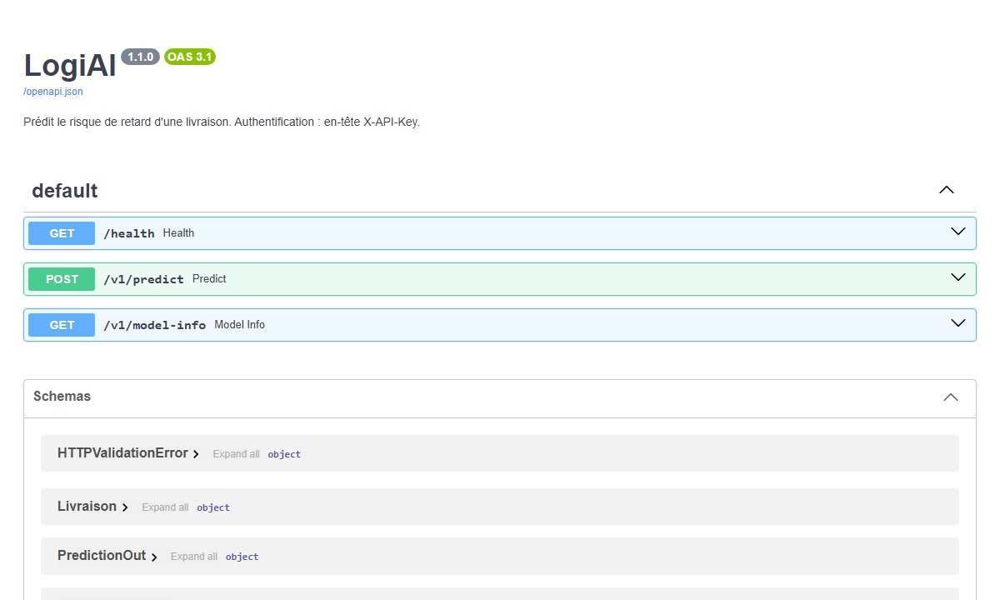
http://localhost:8001/docs.Étape 5 — Les quatre codes HTTP obtenus via Nginx (http://localhost:8080/api/...)
| Requête passée par Nginx (port 8080) | Code attendu | Code obtenu | Détail de la réponse |
|---|---|---|---|
GET /api/health | 200 | 200 | {"status":"ok","model_loaded":true,"auth_configured":true} |
POST /api/v1/predict (sans clé) | 401 | 401 | {"detail":"Clé API absente : renseignez l'en-tête X-API-Key."} |
POST /api/v1/predict (fausse clé) | 401 | 401 | {"detail":"Clé API invalide."} |
POST /api/v1/predict (bonne clé) | 200 | 200 | {"probabilite_retard":0.732,"alerte":true,"seuil":0.4,"model_version":"1.0"} |
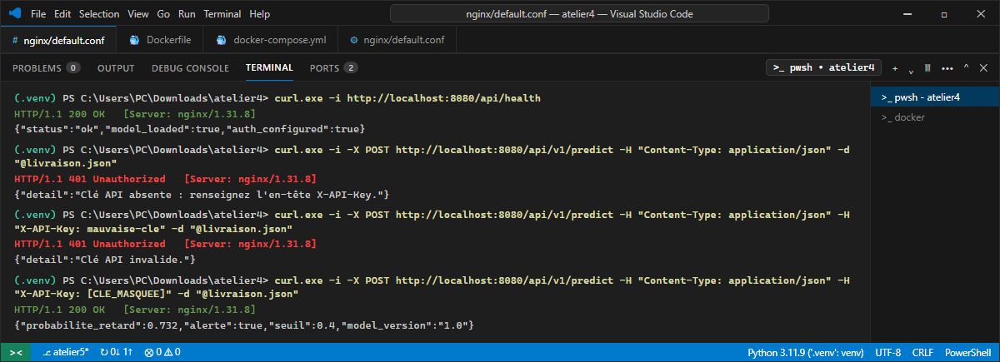
curl.exe exécutées via Nginx sur le port 8080.Étape 6 — Observation F12 (onglet Network) : origine unique et absence de requête OPTIONS
La requête part vers http://localhost:8080/api/v1/predict. Contrairement à l'Atelier 4 (port 5500 → port 8000),
aucune requête préliminaire OPTIONS n'apparaît car la page et l'API partagent la même origine (http://localhost:8080).
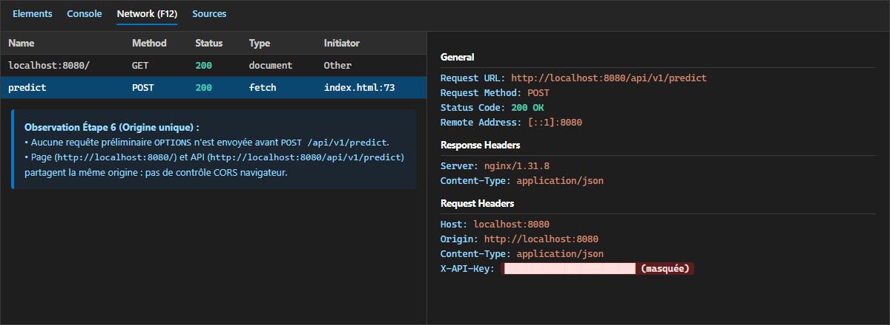
POST http://localhost:8080/api/v1/predict sans preflight OPTIONS (clé masquée).5.4Logs, statistiques, arrêt de l'API (étape 8) et volumes (étape 9)
Étape 7 — Observer : docker compose logs et docker stats
| Conteneur | CPU % | Mémoire (MEM USAGE / LIMIT) | MEM % | Réseau (NET I/O) | Processus (PIDS) |
|---|---|---|---|---|---|
logiai-api | 0.22 % | 125.3 MiB / 7.572 GiB | 1.62 % | 5.02 kB / 2.38 kB | 36 |
logiai-web | 0.00 % | 13.54 MiB / 7.572 GiB | 0.17 % | 5.89 kB / 5.39 kB | 17 |
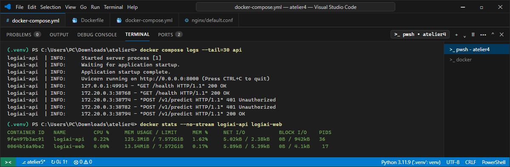
logiai-api et ressources mesurées avec docker stats.Étape 8 — Casser puis réparer (docker compose stop api / start api)
Lorsque l'API est arrêtée (docker compose stop api), Nginx ne peut plus joindre http://api:8000/ et renvoie une erreur de passerelle
502 Bad Gateway (ou 504 Gateway Time-out) en HTML. Côté page web, reponse.json() échoue sur ce HTML et déclenche le bloc catch qui affiche :
API injoignable ou requête bloquée (CORS). Vérifiez qu'uvicorn est lancé et regardez la console F12. Après docker compose start api, le service repasse healthy et la page refonctionne immédiatement.
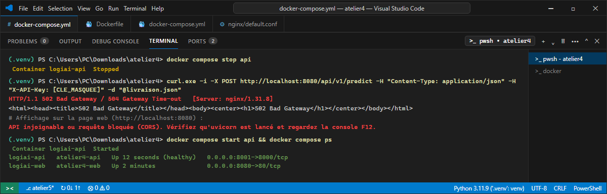
logiai-api (erreur de passerelle Nginx et message affiché sur la page), puis relance avec docker compose start api.Étape 9 — Voir le volume (/app/models)
Le montage ./models:/app/models relie directement le dossier de Windows au conteneur : un nouveau model.joblib ré-entraîné sur Windows est vu sans reconstruire l'image. En revanche, logiai/ n'étant pas monté en volume mais copié par COPY, toute modification du code Python nécessite docker compose up -d --build.
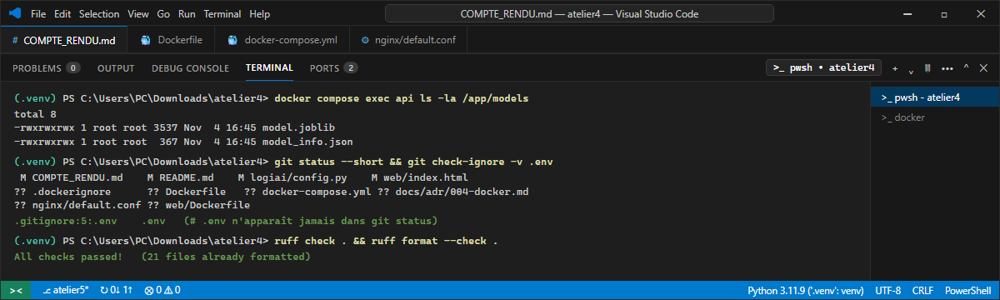
/app/models, preuve que .env est exclu de Git et vérifications ruff.6.Décisions d'architecture (ADR 004) et Questions
6.1 Résumé de l'ADR 004 (docs/adr/004-docker.md)
-
Décision 1 — Le modèle est-il copié dans l'image (
COPY) ou monté en volume ?
Choix retenu : les deux (COPY models/ ./models/dans leDockerfile+ volume./models:/app/modelsdansdocker-compose.yml).
Ce que l'autre option ferait perdre : avecCOPYseul, chaque ré-entraînement (python -m logiai.train) obligerait à reconstruire toute l'image Docker ; avec un volume seul, l'image distribuée seule serait dépourvue de modèle et renverrait503. -
Décision 2 — Quels ports sont publiés :
8080seulement, ou aussi8001?
Choix retenu :8080et8001en développement/TP ;8080uniquement (ou443HTTPS) en production.
Ce que l'autre option ferait perdre : sans8001en TP, on perd l'accès direct à Swagger UI (http://localhost:8001/docs) ; avec8001ouvert en production, un visiteur peut contourner Nginx et attaquer directement Uvicorn/FastAPI (/docs,/v1/...) sans passer par le reverse proxy.
7. Cinq questions de compréhension et Ticket de sortie
- Quelle différence entre une image et un conteneur ? Une image est un modèle immuable en lecture seule construit par couches à partir d'un
Dockerfile; un conteneur est une instance isolée en exécution créée à partir de cette image, avec une fine couche inscriptible éphémère. - Pourquoi le navigateur appelle-t-il
/api/v1/predictet nonapi:8000? Le navigateur tourne sur Windows, hors du réseau Docker où seul le DNS interne connaît le nomapi. Le chemin relatif/api/v1/predictappelle la même origine (localhost:8080, sans CORS), et Nginx relaie vershttp://api:8000/v1/predict. - Pourquoi
depends_onseul ne suffit-il pas, et que changeservice_healthy?depends_onseul attend seulement le démarrage du conteneur, pas que FastAPI ait chargé le modèle et écoute sur8000.condition: service_healthyattend que lehealthchecksur/healthrenvoie200 OK. - Pourquoi
.envest-il dans.dockerignoreet dansenv_file?.dockerignoreempêche que les clés soient gravées dans une couche de l'image au moment du build, tandis queenv_fileles injecte uniquement en mémoire à l'exécution du conteneur. - Pourquoi
/healthdoit-il rester public ? Parce que lehealthcheckde Docker interrogehttp://127.0.0.1:8000/healthsans clé API : s'il recevait401, l'API serait déclaréeunhealthyet le conteneurwebne démarrerait jamais.
8. Pour aller plus loin & Livraison
- Pistes pour la production : exécuter l'API sous un utilisateur non-root (
USER), séparer les dépendances de test et d'exécution, ne publier que le port de Nginx (fermer8001), activer HTTPS et utiliser des clés longues aléatoires. - Dépôt GitHub :
https://github.com/younes-boujrada/API-REST-FastAPI— Brancheatelier5— Tagtp5/atelier5. - Critères de réussite validés : image construite sans erreur,
.envhors de l'image et de Git,401sans clé et200avec clé,logiai-apihealthy, prédiction par Nginx sur8080, 3 expériences et arrêt de l'API expliqués.
Compte rendu Atelier 5 — BOUJRADA Younes — Année universitaire 2026–2027